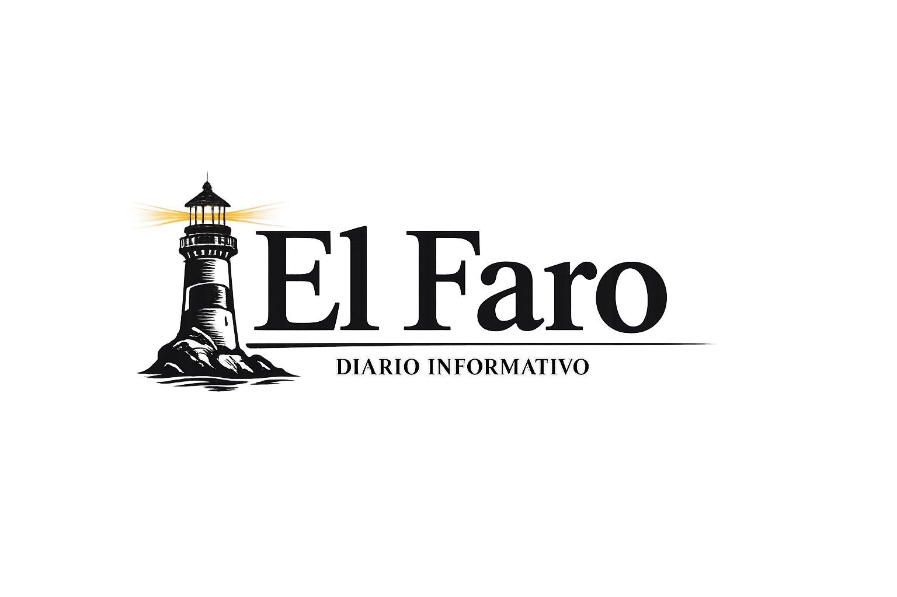

| Título | Categoría | Contenido |
|---|---|---|
| Inauguración de nuevo parque | Ciudad y urbanismo | En el pueblo de Comala se vive la vida al aire libre, este lunes se llavó a cabo la inauguración del nuevo y único parque de la ciudad, atrás quedaron las tardes en la pila de pasto cortado que era el único punto verde de la ciudad. |
| Se reporta alza en el turismo local | Turismo y ocio | Aumenta el turismo en la ciudad de Salamanca, las autoridades descartan que haya sido debido a la layenda urbana de las brujas, adjudicándolo al buen manejo publicitario de la ciudad. |
| Museos abren sus puertas de manera gratuita al público | Cultura | Durante este fin de semana los Museos de todo Chile abrirán de manera gratuita sus puertas en el marco del evento "todos gratis todo cultural". |